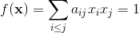

<html>
<head>
	<meta http-equiv="Content-Type" content="text/html; charset=utf-8">
	<link rel=stylesheet href='include/hoj.css' type='text/css'>
</head>
<body>
<center>
<div style="width:90%; text-align:left">

</div>
<table width=96%> 
	<tr align="center" class='hd' valign="top">
				<th><a href="https://www.lydsy.com/JudgeOnline/faqs.php">F.A.Qs</a></th>
		<th><a href="https://www.lydsy.com/JudgeOnline/">Home</a></th>
		<th><a href="https://www.lydsy.com/JudgeOnline/bbs.php">Discuss</a></th>
		<th><a href="https://www.lydsy.com/JudgeOnline/problemset.php">ProblemSet</a></th>
		<th><a href="https://www.lydsy.com/JudgeOnline/status.php">Status</a></th>
		<th><a href="https://www.lydsy.com/JudgeOnline/ranklist.php">Ranklist</a></th>
        <th><a href="https://www.lydsy.com/JudgeOnline/contest.php">Contest</a></th>
        <th><a href="http://begin.lydsy.com/JudgeOnline">入门OJ</a></th>
		<th><a href="https://www.lydsy.com/JudgeOnline/modifypage.php"><b>ModifyUser</b></a>&nbsp;&nbsp;<a href='https://www.lydsy.com/JudgeOnline/userinfo.php?user=Xeonacid'>
				<font color=red>Xeonacid</font></a></th><th><a href="https://www.lydsy.com/JudgeOnline/logout.php">Logout</a></th>		<th><a href="https://www.lydsy.com/JudgeOnline/donation.php"><font color=red>捐赠本站</font></a></th>
	</tr>
</table>
</center>
<center>
<div class="notice">
	<div>
		<B>Notice:</B>注册本OJ方式请见https://www.lydsy.com/JudgeOnline/wttl/thread.php?tid=5671	</div>
</div>
</center>
</div>
<title>Problem 4181. -- Shlw loves matrix III</title><center><h2>4181: Shlw loves matrix III</h2><span class=green>Time Limit: </span>5 Sec&nbsp;&nbsp;<span class=green>Memory Limit: </span>256 MBSec&nbsp;&nbsp;<span class=red>Special Judge</span><br><span class=green>Submit: </span>69&nbsp;&nbsp;<span class=green>Solved: </span>43<br>[<a href='https://www.lydsy.com/JudgeOnline/submitpage.php?id=4181'>Submit</a>][<a href='https://www.lydsy.com/JudgeOnline/problemstatus.php?id=4181'>Status</a>][<a href='https://www.lydsy.com/JudgeOnline/bbs.php?id=4181'>Discuss</a>]</center><h2>Description</h2><div class=content><div>给定一个 d 维空间椭球：</div>
<div></div>
<div></div>
<div>求其与原点 0 的最近距离。</div>
<p></p></div><h2>Input</h2><div class=content><div>第一行一个整数 d;</div>
<div>接下来 d 行描述了一个系数矩阵 faijg，满足 aij = aji。</div>
<p></p></div><h2>Output</h2><div class=content><div>一行一个实数，表示答案。答案与标准答案误差不超过 10^- 8 即视为正确。</div>
<div></div>
<p></p></div><h2>Sample Input</h2>
			<div class=content><span class=sampledata>3<br />
1 0 0<br />
0 0.01 0<br />
0 0 0.04</span></div><h2>Sample Output</h2>
			<div class=content><span class=sampledata>1.00000000</span></div><h2>HINT</h2>
			<div class=content><p><p>对于 100% 的数据，满足 d &lt;= 15; 0 &lt; aii &lt; 1; &nbsp;|aij| &nbsp;&lt; 2；</p><br />
<p></p></p></div><h2>Source</h2>
			<div class=content><p><a href='https://www.lydsy.com/JudgeOnline/problemset.php?search=By&#32;submittersubmitter'>By submittersubmitter</a></p></div><center>[<a href='https://www.lydsy.com/JudgeOnline/submitpage.php?id=4181'>Submit</a>][<a href='https://www.lydsy.com/JudgeOnline/problemstatus.php?id=4181'>Status</a>][<a href='https://www.lydsy.com/JudgeOnline/bbs.php?id=4181'>Discuss</a>]</center><br>
<a href="https://www.lydsy.com/JudgeOnline/"><span class=red>HOME</span></a>
<a href="javascript:history.go(-1)"><span class=red>Back</span></a>

<hr>
<center>
	<div class="footer">
			<a href="https://www.lydsy.com/JudgeOnline/setlang.php?lang=ko">한국어</a>&nbsp;
		<a href="https://www.lydsy.com/JudgeOnline/setlang.php?lang=cn">中文</a>&nbsp;
		<a href="https://www.lydsy.com/JudgeOnline/setlang.php?lang=fa">فارسی</a>&nbsp;
		<a href="https://www.lydsy.com/JudgeOnline/setlang.php?lang=en">English</a>&nbsp;
		<a href="https://www.lydsy.com/JudgeOnline/setlang.php?lang=th">ไทย</a>
	<br>		<div>版权所有 &copy;2008-2018 大视野在线测评</div>
		<div>Based on opensource project <a href="http://hustoj.googlecode.com">hustoj</a>.</div>
	</div>
</center>
</body>
</html>
